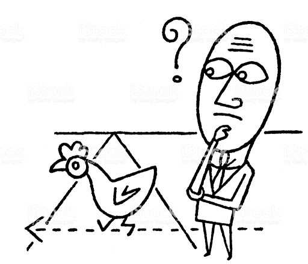

Standard Humour
Standard jokes are arguably the hardest type of humour to pull of successfully. Standard jokes are the most original jokes told, such as, “Why’d the chicken cross the road? To get to the other side!” Unfortunately, these jokes have been told so repetitively that it has lost its impact, so we adapt. The best way to tell these jokes is to tell it to someone, but make it seem you’re not truly trying to use it as a quality joke. Using this humour is a much more random and silly way to be funny, even though sometimes it will not work. Maybe you could bring it up every now and then, most of the time you’ll get a chuckle, hence why this genre of comedy isn’t too great.